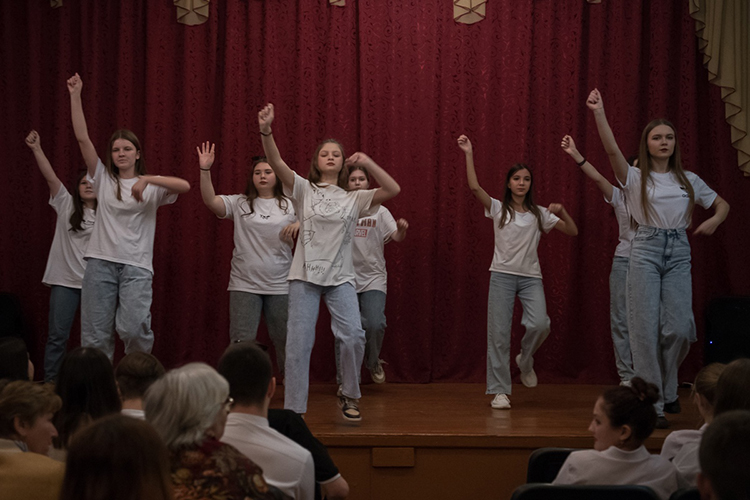

Музыкальное развитие дошкольников с преподавателем является важной частью их образования. В процессе занятий дети знакомятся с различными музыкальными инструментами, учатся распознавать и воспроизводить звуки, развивают ритмическое чувство и музыкальный слух. Преподаватель помогает детям развивать свои творческие способности, выражать себя через музыку и научиться работать в группе. Занятия могут включать игры, пение, танцы и экспериментирование с различными музыкальными материалами. Весь этот процесс способствует развитию моторики, памяти, внимания и эмоциональной сферы детей, а также помогает им улучшить коммуникативные и социальные навыки.
Цель программы музыкального развития с дошкольниками заключается в развитии и улучшении различных аспектов и навыков, связанных с музыкой. Основные цели программы включают: Развитие музыкального слуха: Программа направлена на развитие способности воспринимать и различать различные музыкальные звуки, тональности, ритмы и мелодии. Это помогает развить музыкальный слух и способность распознавать и анализировать звуки. Развитие ритмических навыков: Программа музыкального развития помогает детям развить чувство ритма и координацию движений. Она включает в себя игры, движения и танцы, которые помогают детям осознать и исполнять ритмические фигуры и паттерны. Развитие вокальных навыков: Программа включает в себя пение и вокальные упражнения, которые помогают детям развить свои вокальные способности, расширить диапазон голоса и улучшить произношение и артикуляцию. Развитие музыкальной памяти: Программа музыкального развития помогает детям развить музыкальную память и способность запоминать и воспроизводить мелодии, ритмы и фразы. Развитие творческого мышления: Программа музыкального развития стимулирует творческое мышление и воображение детей. Она включает в себя импровизацию, композицию и экспериментирование с различными звуками и инструментами. Подготовка к изучению музыкальных инструментов: Программа музыкального развития может быть первым шагом в подготовке детей к изучению инструментов в будущем. Она помогает детям понять основы музыки и развить интерес к конкретному инструменту. Цель программы музыкального развития с дошкольниками - это не только развитие музыкальных навыков, но и способствование развитию полноценной личности, обогащению внутреннего мира и развитию ключевых компетенций через музыку.